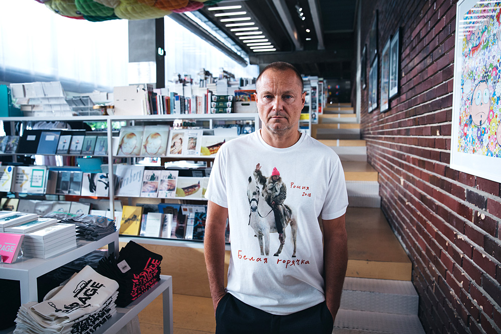
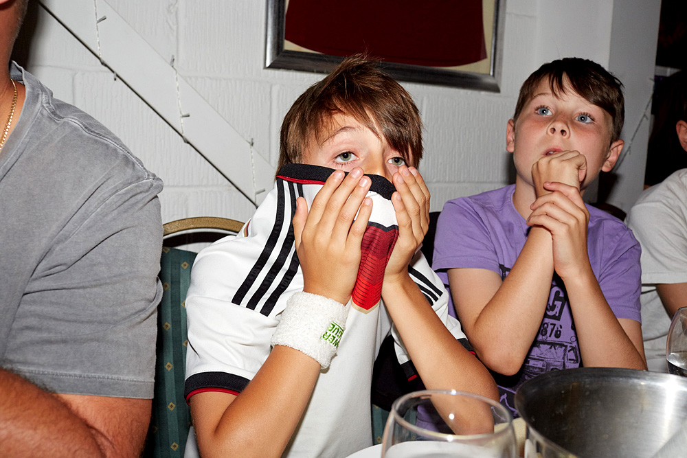
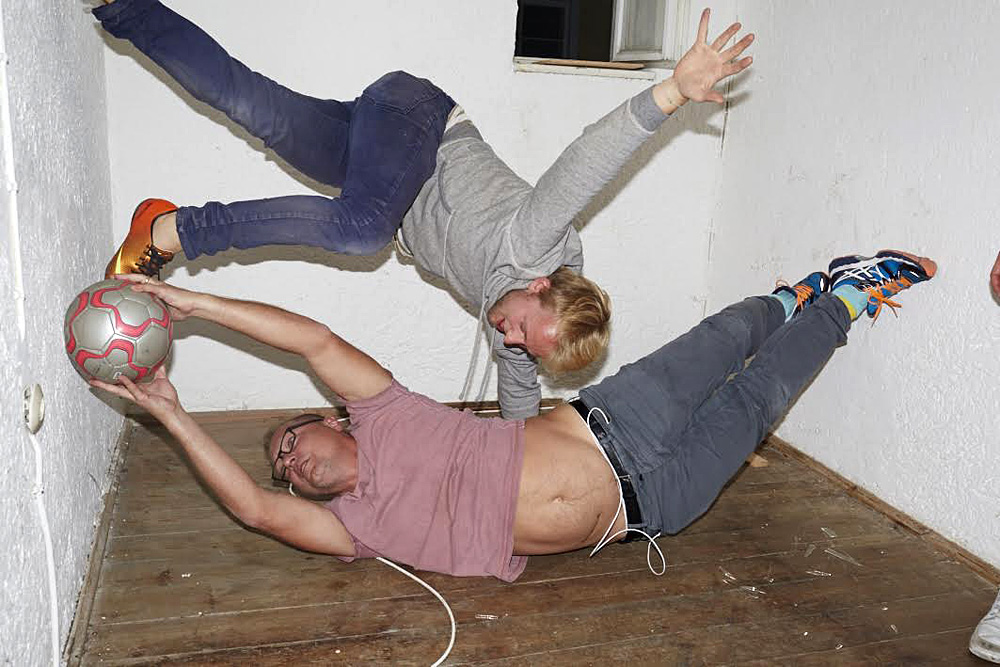
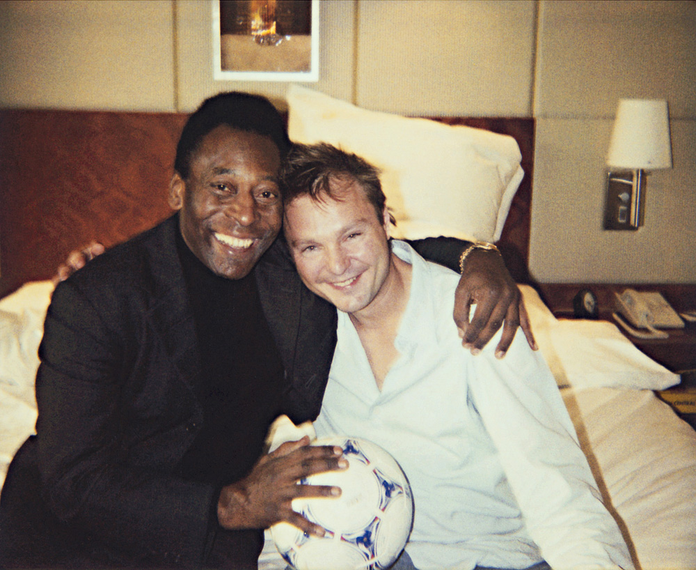

К игре сборной Германии на чемпионате мира по футболу — 2018 TANR публикует интервью с ее большим фанатом — фотографом и художником Юргеном Теллером, рассказавшим также о силе власти над моделью и о своем отношении к «бодипозитиву»
С кем вам больше нравится работать: c простыми людьми или со знаменитостями?
Всегда по-разному. Знаменитые люди разные, и я не то чтобы разграничиваю людей по этому принципу. Ко всем нужен индивидуальный подход, но, конечно, сложнее снимать знаменитых людей. Здесь тоже нужно разделять, актриса это или, например, художник, ведь оба они в какой-то степени звезды. Иногда человек знает, как двигаться, и хочет поработать со мной, в других случаях приходится общаться со скучными агентами знаменитостей, и это вгоняет в тоску.
Обычно вы говорите, кому что делать на ваших снимках?
Конечно, я постоянно указываю всем, что делать. Но одновременно в отношении новых идей я полагаюсь на человека, которого снимаю.
Можете описать свой рабочий процесс? Вы снимаете спонтанно или долго обдумываете каждый кадр?
За любой моей работой, конечно, всегда стоят идея и определенная структура, и мне нужно осуществить эту идею. Но внутри этого я всегда открыт влияниям, над которыми не властен. Например, если внезапно выпадет снег, для многих он станет помехой, но я оберну это обстоятельство в свою пользу. Я прислушиваюсь и к человеку, которого фотографирую, и, если у героя есть свои мысли, я с радостью отклонюсь от первоначальной идеи, ведь это совместная работа. Я быстро реагирую на такие вещи. Если мой план не работает так, как задумано, я просто останавливаюсь, пью кофе и болтаю с человеком. Мы в итоге можем поменять место съемки или что-то еще.
Как вы понимаете, что снимок «выстрелит» или наоборот?
Я просто знаю, когда все правильно. При этом у меня нет проблем с тем, чтобы сказать кому-то: «Ничего не выходит, я ошибся». Иногда приходится все переснимать. Я объясняю человеку, что по каким-то причинам снимки не получились, и затем мы работаем, пока не останемся довольны результатом. Это тяжелый труд. Я не просто щелкаю камерой.
Вы когда-нибудь злились на человека, которого снимаете, или разочаровывались в нем?
Разумеется. Периодически случается столкновение культур, обычно это происходит с американцами. У них часто другие представления о работе, чем у меня. Скажем, когда я хочу по-настоящему создать что-то вместе, они могут хотеть только продвигать свой продукт, но не готовы по-настоящему полноценно сотрудничать со мной, не воспринимают меня всерьез как художника. Они просто желают продать, например, свой фильм, а я не вижу в этом никакого смысла.
Не чувствуете ли вы себя более скованным в работе с моделями из-за обвинений фотографов и режиссеров в сексуальных домогательствах?
Я и раньше никогда бы себе не позволил неподобающего поведения, и в будущем не собираюсь. Я не делаю ничего, что считаю неприемлемым, например, если человек не контролирует процесс и не понимает, что я делаю. Я всегда стараюсь рассказать, как планирую действовать. Женщины, которых я фотографирую, например Шарлотта Рэмплинг, Кристен Макменами или Вивьен Вествуд, — зрелые личности, которые могут сказать да или нет. Я никогда не просил молодых девушек о чем-то, о чем они могут пожалеть. Всегда есть опасность того, что фотограф неправильно использует свою власть, и я осознаю ее наличие у меня. Изучению этой ситуации посвящена книга Go-sees («Кастинги». — TANR), для которой я в течение года снимал молодых моделей, приходивших в мою студию. Меня поразила их неуверенность и представления о том, кто может быть моделью. Они показывали мне свои портфолио, я спрашивал, могу ли сфотографировать их в том виде, в котором они пришли. Для меня эта работа затрагивала вопросы власти фотографа и идеалов красоты.
Вы прославились тем, что снимаете людей такими, какие они есть. Как вы относитесь к современным движениям вроде «бодипозитива»?
Не слышал о таком. Но вообще отсутствие ретуши кажется мне естественным. С чего бы мне убирать, например, родинку с вашего лица или делать ваш нос длиннее, если вы выглядите так, как выглядите?
А что вы думаете об избыточной ретуши в глянце?
Я не понимаю ретуши, которая доходит до смешного. Мне кажется естественным взрослеть, и каждый должен быть доволен собой. Может, не все хотят ощущать, как стареют их тела, но это часть процесса, ты ведь что-то получаешь взамен — удовлетворение и, хочется надеяться, мудрость. Я сейчас чувствую себя гораздо счастливее, чем в 25 и даже 30, когда был моложе и, наверное, симпатичнее. Но сейчас у меня больше уверенности.
А вас просят ретушировать снимки?
Периодически да, в рекламных кампаниях. И иногда мне приходится это делать, но только до определенной степени. Например, чтобы складки на одежде лежали гармоничнее.
Глядя на ваши ранние работы, можете сказать, что изменилось со временем?
Мой подход остался прежним, но, что касается идей проектов, теперь я работаю в более концептуальном ключе. Я больше уверен в своих идеях, а подход к людям, которых я снимаю, психологические инструменты, которыми я пользуюсь, совсем не изменились. Просто сегодня я больше знаю о них и о силе, которая у меня есть, лучше знаю, как достичь нужного результата. Но иногда я не понимаю, как сделать лучше, и позволяю герою съемки решить самому.
Автор: Дарья Палаткина15 АВГУСТА